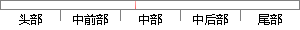

然而不能保证训练算法能能够学得这个函数，原因之一是用于训练的优化算法可能找不到用于期望函数的参数值，另外就是训练算法可能由于过拟合而选择了错误的参数。
片段位置图

相似结果|
1
原句片段：于期望函数的参数值，另外就是训练算法可能由于过拟合而选择了错误的参数。
相似片段 1：多的MLP就一定能表示这个函数,但这不能保证我们的训练算法一定能学习到这个函数,因为可能我们的优化算法找不到期望函数的参数值或者因为过拟合而选择了错误的函数。...
|
※ 片段修改建议 ※
近似词参考：- 然而：但是
- 不能：不克不及
- 保证：包管
- 训练：练习
- 能够：可以或许
- 原因：缘由 缘故原由 缘故
- 训练：练习
- 可能：大概
- 期望：盼望 指望
- 另外：别的 此外
- 就是：便是
- 训练：练习
- 可能：大概
- 由于：因为
- 错误：毛病 过错 谬误
系统自动生成语句：但是不克不及包管练习算法能可以或许学得这个函数，缘由之一是用于练习的优化算法大概找不到用于盼望函数的参数值，别的便是练习算法大概因为过拟合而选择了毛病的参数。
注：本片段修改建议为系统自动生成，仅供参考。